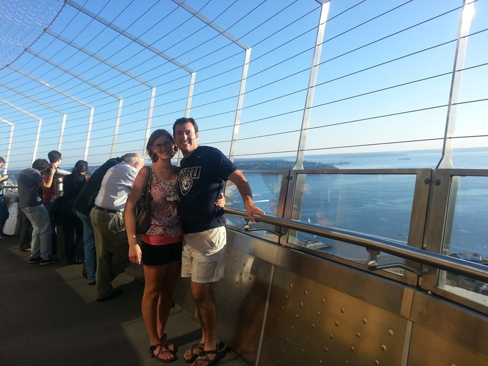

How We Met



Last year, Mrs. Scruggs invited my family over for dinner. Mrs. Scruggs taught Amanda in her Orchestra class and now Allie is in her class. This past year, my mom helped out by being the treasurer for the group.
Mrs. Scruggs invited my family over for dinner a couple times. I was able to make the first dinner, which was absolutely wonderful. Mrs. Scruggs is a great cook! She has a way of mixing different ingredients without going by a specific recipe. Later, our family was invited to go to another dinner at the Scruggs’ house, but I was unable to make it. I was very sick that week, so I stayed home while my whole family went to their house.
Later the following week when I was feeling better, my mom asked me to go to the Orchestra fun night to help her volunteer. I was up to going! I was more than ready to be out of the house. When we got there, I talked with Mrs. Scruggs about her school year and classes. She continued to tell me that she missed me the other night. Her sons were in town and were present at the dinner, which is the one that I missed. She then told me that her oldest son is single and she thinks we would get along well. She also mentioned that I would make a great daughter-in-law. Haha who knew that one day it would work out that way?
So, I couldn’t help but smile and giggle. I talked to my mom that night while we were volunteering. I wanted to know all the details about Bill. My mom told me how sweet he was and how they really enjoyed meeting him. Well, a little later, Mrs. Scruggs told me that Bill was going to stop by the school. I started to get really nervous. His mom told us that he needed to drop something off for her, but later we found out that it was all a set up. She actually told him to bring some friends and come to the school to play basketball. Mothers are so clever!
So, I ended up meeting Bill that night, which I want to say was February 15, 2013. I immediately liked his smile and his personality. I also thought he was very cute and mature, which if you know me, I have always been told that I act mature for my age, so I knew he already had many great qualities. At the end of the night, Mrs. Scruggs told me she would love to have my family over for dinner sometime soon.
We ended up having the next dinner on February 22, 2013. This dinner gave us the opportunity to get to know each other in a more comfortable setting. Although it was supposed to be comforting, I was a bit nervous. I didn’t want to say anything stupid, so I stayed quite most of the night. I spent most of the dinner listening to Bill and trying to figure out more about him.
During the next week, out moms were like high school girls. They gossiped and texted each other throughout each day, in order to give the latest updates about us. I really didn’t mind because it was pretty helpful to know more about how Bill felt. I learned that he was very eager to take me out. I also learned that he was a bit shy with this process.
Later the following week, I got a text from Allie with Bill’s number. She said to save it in my phone so I would know when he was calling. She told me that she gave Mrs. Scruggs my number. I found out later that Bill had no idea that I knew there was a good chance he was going to call. I remember sitting around the night he called. He called at exactly 9pm to ask me out on a date.
We went on our first date on March 2, 2013. He took me out to Mellow Mushroom, which is this great pizza place. Afterwards, we went to AMC to watch “Silver Linings Playbook.”
After this date, I knew I really liked Bill and from there we kept going out and talking to each other.
There is one date in particular I would like to highlight. Bill took me Saigon Café, which is an awesome Vietnamese restaurant. There was a moment while Bill was talking to me that everything just stopped. I realized that it might have been awkward because Bill was asking me what I was thinking. I must have had this blank thoughtful look on my face. I ended up telling him later that it was then that I knew I could see myself being with him. I knew early on that I would love to spend my life with Bill. I am excited to say that I am marrying my best friend. Bill understands me like no one else does. He gets me and makes me feel comfortable in every way. Although we have some opposite qualities, we have a lot in common and I believe this is what helps us to understand how each other ticks. I also love our differences because they complement each other. Bill has taught me how to relax and enjoy life. I was never able to take a moment of rest and just enjoy the day. I am not the best at it, but I’ve been able to work on it since being with Bill. I think if Bill were to answer this, he would say that I have helped him to be early/ on time to events and more organized, which you can see this by looking at my calendar… skip my room ;)